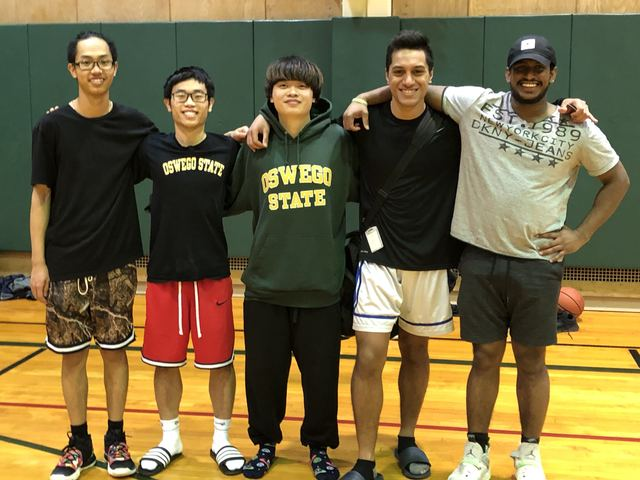
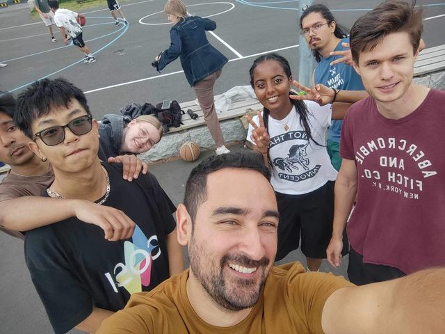
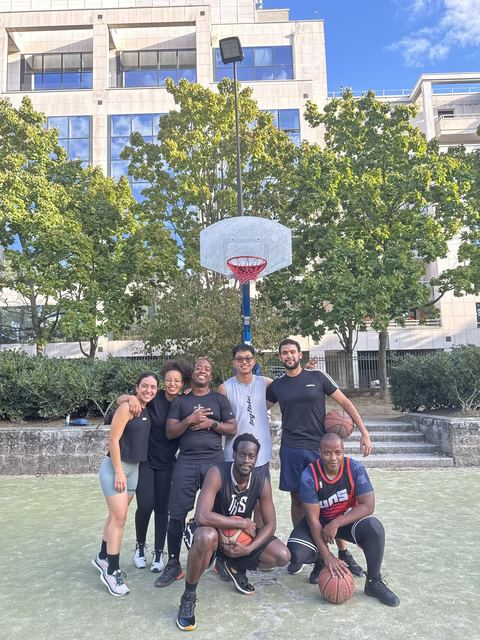
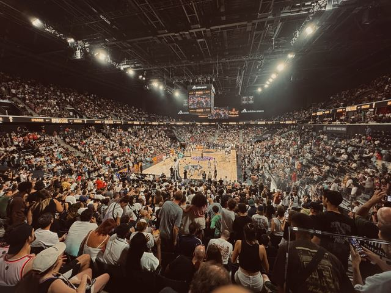

Basketball
I started playing in high school, joined a school tournament, and never stopped. It is also how I make friends every time I move: teammates at SUNY Oswego, pickup games by the lake in Gjøvik, and games with colleagues from DXOMARK in Paris. I still play today.
Kobe Bryant and Stephen Curry taught me that work ethic and adaptability matter off the court as much as on it.




